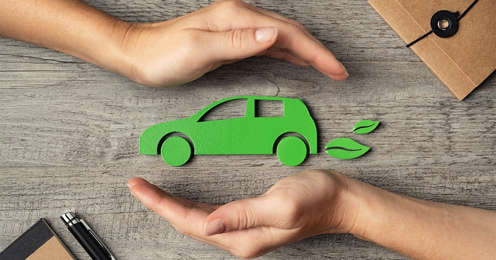

Mobilidade Sustentável
O transporte é uma das principais fontes de emissão de gases de efeito estufa. Optar por meios de transporte mais sustentáveis, como bicicletas, transportes públicos, ou até mesmo a prática de carona solidária, pode reduzir significativamente essas emissões. Além disso, a mobilidade sustentável promove a saúde física e mental.